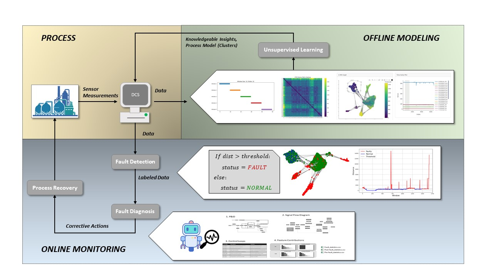
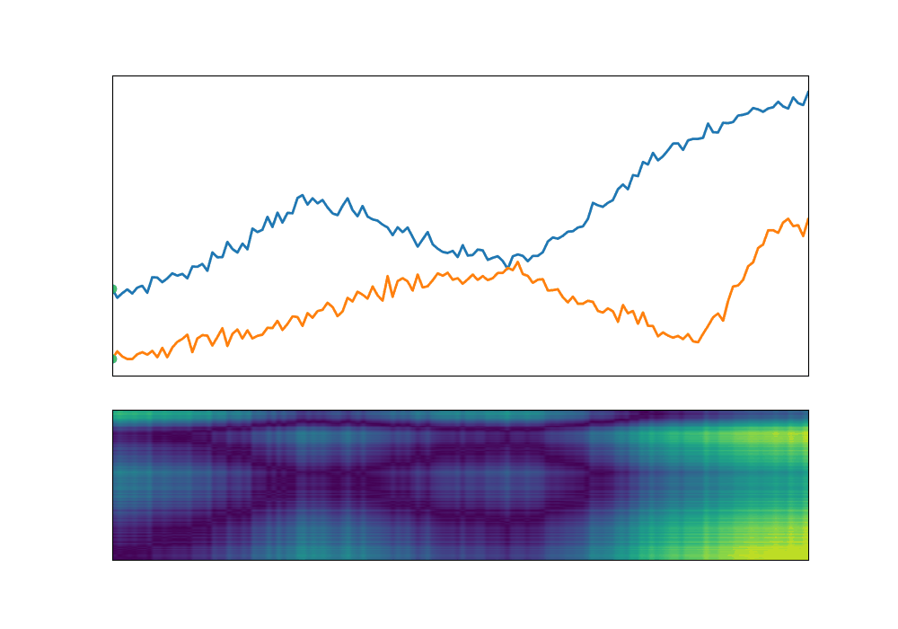
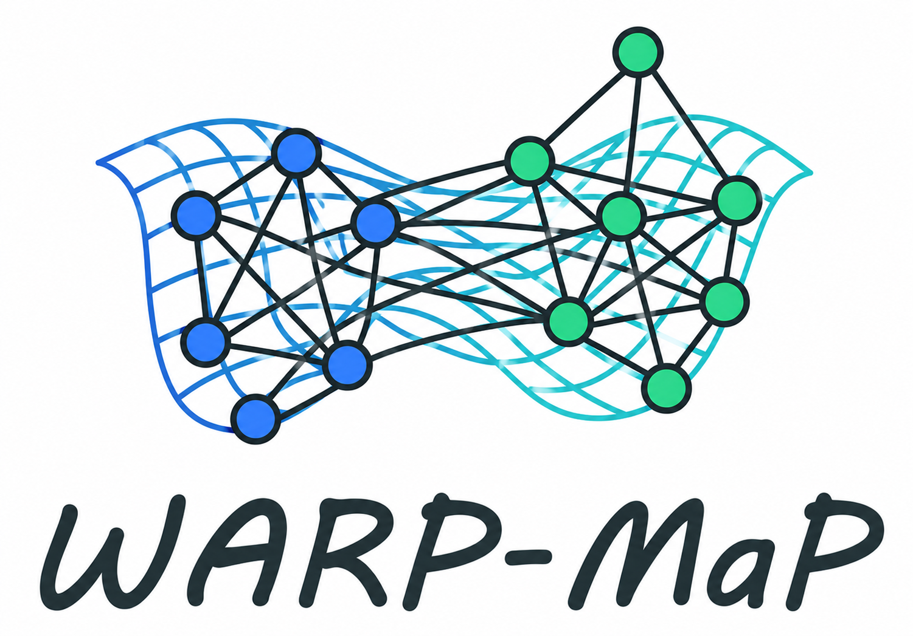
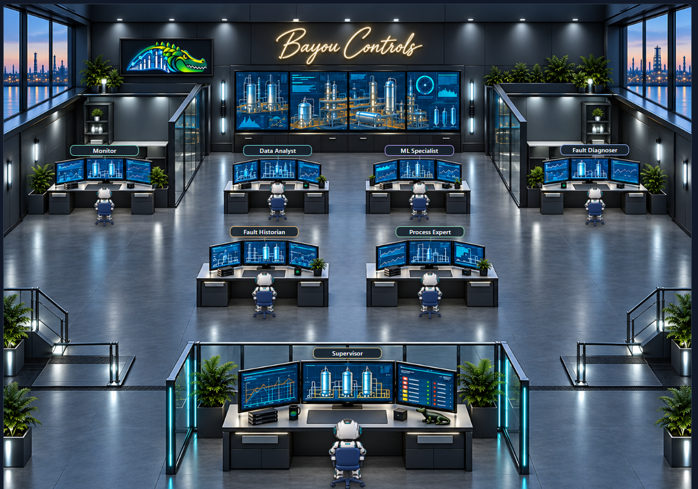
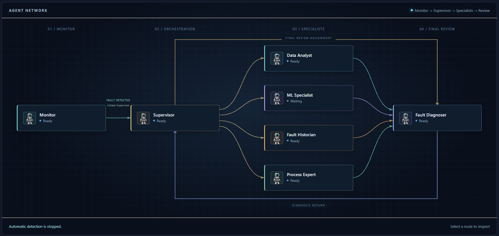

Research
My doctoral research uses industrial time series to study how chemical processes behave and how we can monitor and control them. I use unsupervised learning to identify recurring operating conditions through process clustering and detect when a process departs from expected behavior. I also study data-driven approaches to process control, including PID autotuning.
Fault detection and diagnosis framework
The framework brings process modeling, fault detection, and fault diagnosis together. Offline, unsupervised learning identifies recurring operating patterns in historical sensor data. Online, incoming measurements are compared with those patterns to flag unusual behavior. A flagged event then gives engineers a starting point for investigating which variables changed and what might explain the disturbance.

WARP-MaP
José A. Romagnoli and I developed WARP-MaP to address a problem in time-series process modeling: the same process event can occur at different speeds or with different delays. Comparing measurements at fixed time points can obscure those similarities. WARP-MaP uses dynamic time warping to align windows of multivariate data and puts similar windows near each other in a two-dimensional graph. The map reveals recurring patterns, and an adaptive threshold helps flag unusual behavior online. Read the WARP-MaP paper.


Agentic frameworks for fault diagnosis
I’m currently developing agentic workflows that help engineers investigate what happened after a monitoring system flags unusual behavior. I’m exploring how an AI agent can use diagnostic tools to compare current trends with operating history, examine process relationships, and summarize possible causes with the supporting evidence. This builds on our work combining graph-based monitoring with language-model-assisted diagnosis. Read the AI-assisted diagnosis paper.


Publications
2026
-
Graph-Based, Time-Warped Embedding for Time Series Analysis and Process Monitoring
Territo, K., & Romagnoli, J. A.
Industrial & Engineering Chemistry Research, 65(8), 4568–4581.
DOI: 10.1021/acs.iecr.5c05160 -
A Unified, Graph-Based Framework for Timeseries Process Clustering, Adaptive Process Monitoring, and LLM-Assisted Fault Diagnosis
Territo, K., & Romagnoli, J. A.
AIChE Spring Meeting and 22nd Global Congress on Process Safety.
AIChE proceedings -
Connecting the Dots: A Graph-Based Approach for Unsupervised Learning and Adaptive Process Monitoring with LLM-Assisted Fault Diagnosis
Territo, K., & Romagnoli, J. A.
Systems and Control Transactions, 5, 2473–2480.
DOI: 10.69997/sct.104309 -
Intelligent Temporal Synchronization Enhanced Cointegration Framework for Non-Stationary Industrial Process Monitoring
Rao, J., Ji, C., Territo, K., Wang, J., Sun, W., & Romagnoli, J. A.
Process Safety and Environmental Protection, 108410.
DOI: 10.1016/j.psep.2026.108410 -
Toward Harnessing AI for Surfactant Chemistry: Prediction of Critical Micelle Concentration
Marchan, G. T., Balogun, T. O., Territo, K., Das, R., Olayiwola, T., Kumar, R., & Romagnoli, J. A.
Computational Materials Science, 265, 114548.
DOI: 10.1016/j.commatsci.2026.114548 -
Semi-Supervised Generative Augmentation Improves Surfactant Surface Tension Prediction from Limited Experimental Data
Marchan, G. C. T., Territo, K., & Romagnoli, J. A.
Systems and Control Transactions, 5, 1111–1118.
DOI: 10.69997/sct.100178
2025
-
Autonomous PID Tuning for Industrial Process Control: A Surrogate Model and Agent-Based Approach
Territo, K., & Romagnoli, J. A.
AIChE Spring Meeting and Global Congress on Process Safety.
AIChE proceedings -
Towards Self-Tuning PID Controllers: A Data-Driven, Reinforcement Learning Approach for Industrial Automation
Territo, K., Vallet, P., & Romagnoli, J. A.
Systems and Control Transactions, 4, 1843–1848.
DOI: 10.69997/sct.132857 -
Physics-Informed Data-Driven Control of Electrochemical Separation Processes
Olayiwola, T., Territo, K., & Romagnoli, J.
Systems and Control Transactions, 1908–1914.
DOI: 10.69997/sct.163984
2024
-
JMP-FASTMAN: All-in-One Tool for Data Exploration and Fault Detection Analysis
Territo, K., & Romagnoli, J. A.
AIChE Spring Meeting and Global Congress on Process Safety.
AIChE proceedings -
FASTMAN-JMP: All-in-One Tool for Data Mining and Model Building
Territo, K., & Romagnoli, J. A.
Computer Aided Chemical Engineering, 53, 3421–3426.
DOI: 10.1016/B978-0-443-28824-1.50571-8